Наука должна быть живой
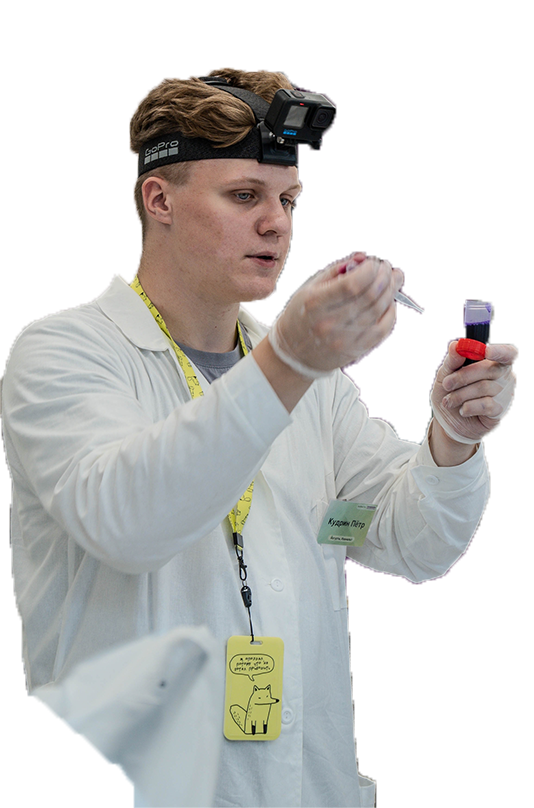
Биология и химия без зубрёжки и хаоса. Разбираемся в логике предмета, строим понятный маршрут и идём к результату вместе.
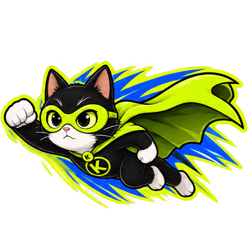
КЭТАЛИЗАТОР — это школа и система подготовки. Но за каждым занятием, планом и обратной связью стою я — Пётр Кудрин.

Педагог дополнительного образования: научные занятия, практикумы и работа со школьниками.
Неважно, нужно ли подтянуть школьную программу или системно готовиться к экзамену — план строится под стартовую точку конкретного ученика.
Темы, задания, повторение и контроль прогресса.
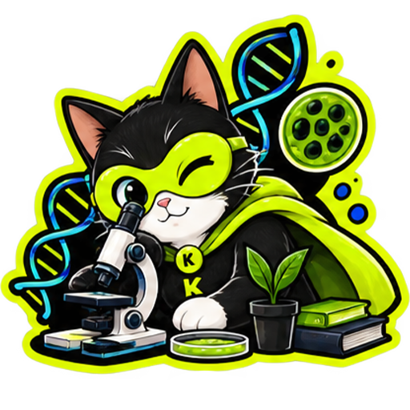
Формулы, реакции, задачи и экзаменационная логика.
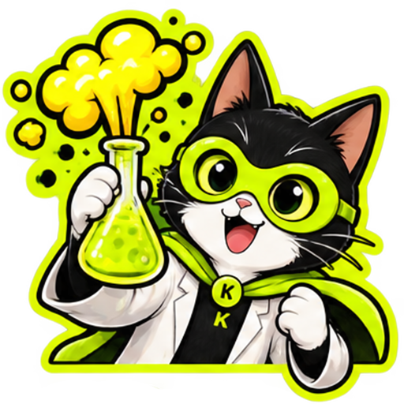
Связываем темы между собой и учимся объяснять ответ.
Углубляем базу и доводим алгоритмы до автоматизма.
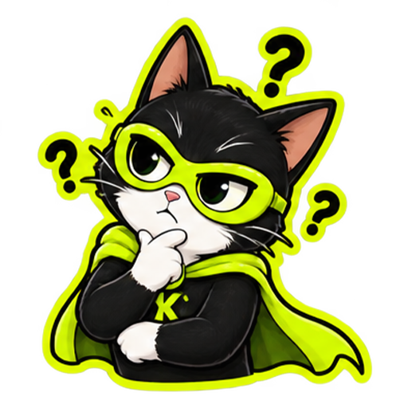
На пробном занятии я смотрю не только на количество правильных ответов. Важно увидеть, как ученик рассуждает, работает с ошибкой, использует подсказку и переносит новую информацию на похожее задание.
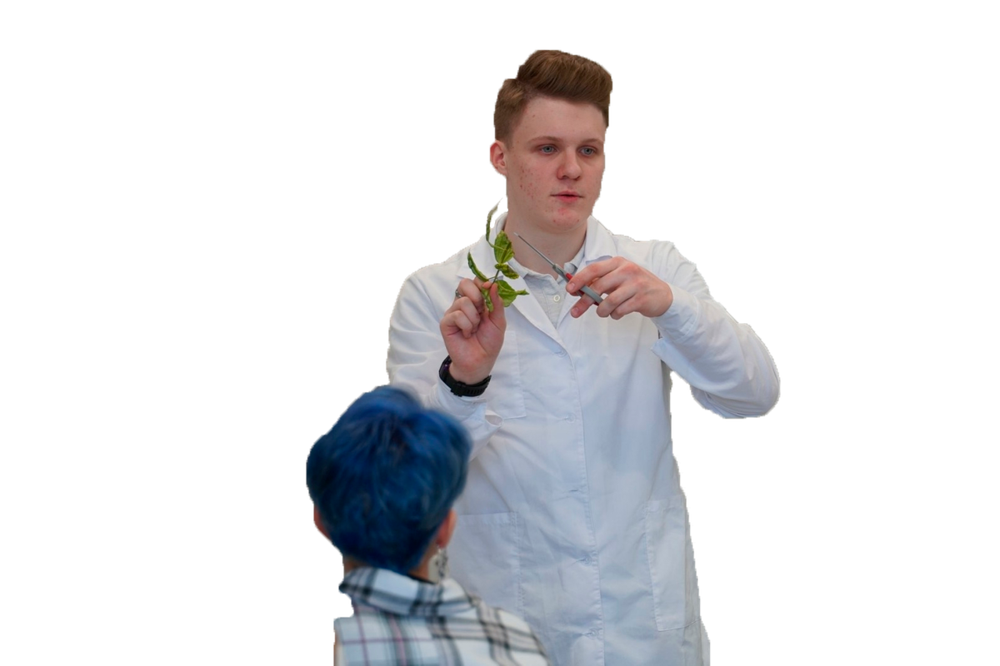
Определяем текущий уровень, пробелы и особенности обучения.
Строим маршрут под цель, срок и реальную нагрузку ученика.
Разбираем смысл, сразу закрепляем заданиями и возвращаемся к слабым местам.
Домашняя работа, пробники, обратная связь и корректировка плана.
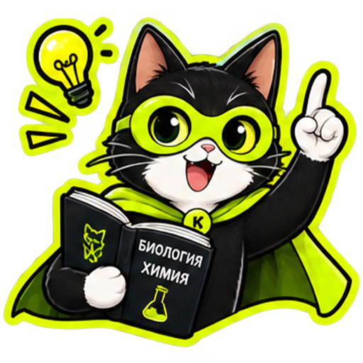
Чек-листы помогают видеть подготовку целиком: что уже закрыто, что нужно повторить и где пока не хватает практики.
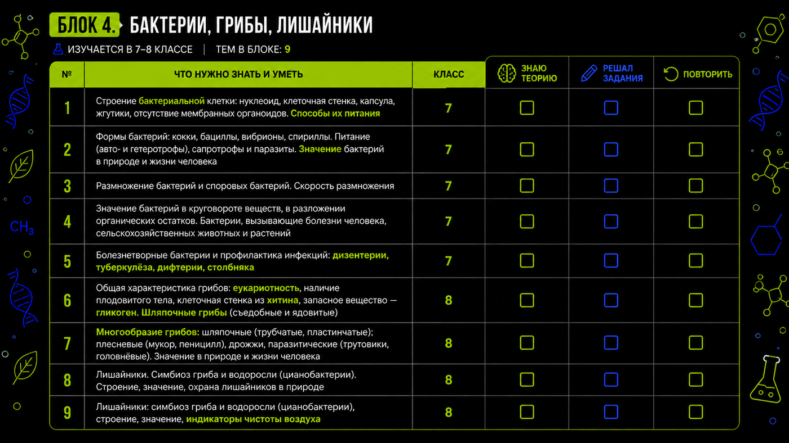
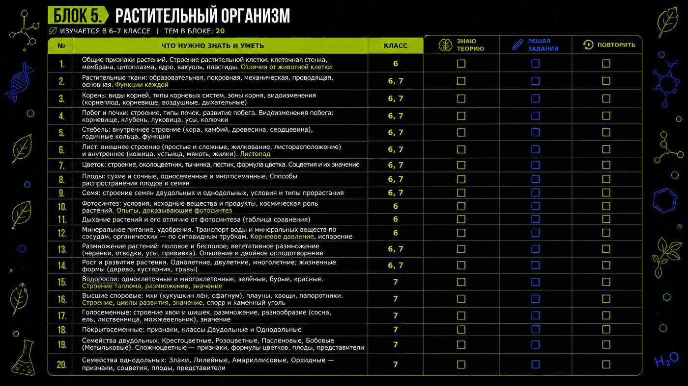
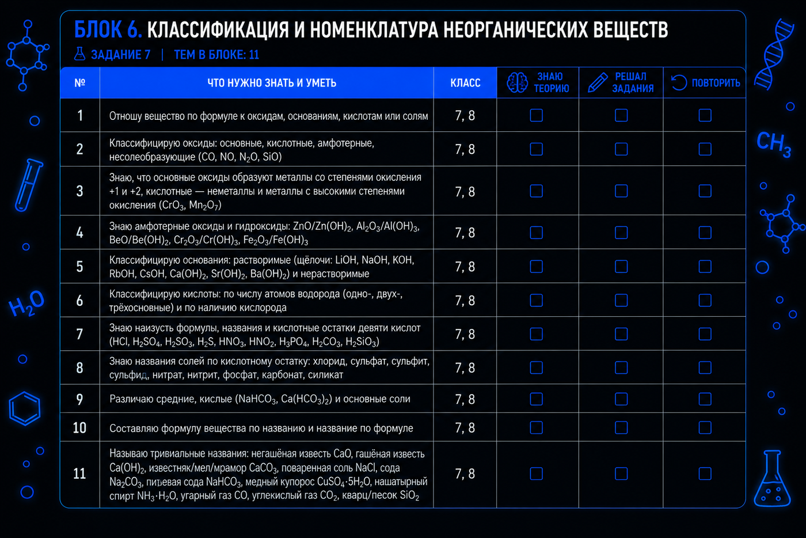
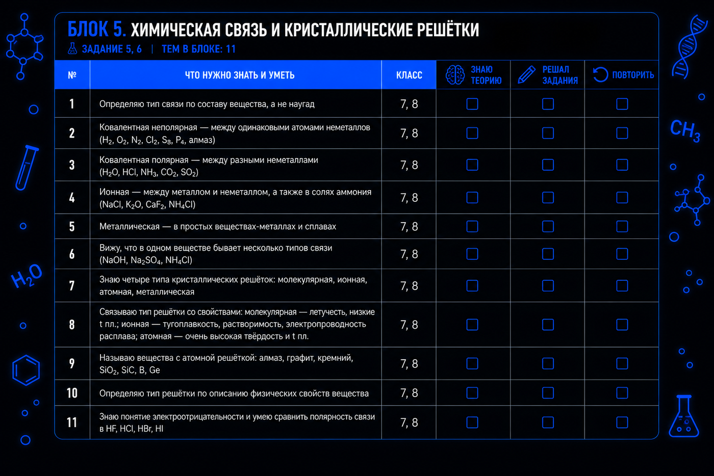
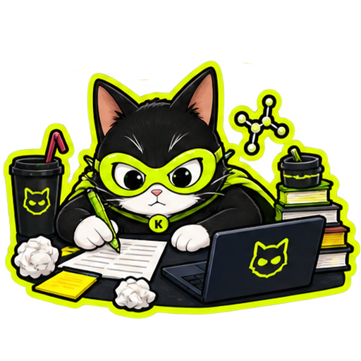
У каждого родителя есть личный кабинет. Из любой точки мира можно посмотреть, как идёт подготовка ребёнка — без необходимости ждать отдельного отчёта.
После пробного Хорошо рассуждает и быстро использует подсказку.
Органические соединения · задания 1–5
Чем длиннее пакет, тем проще выстроить непрерывный маршрут подготовки и регулярно контролировать прогресс.
Если друг покупает тариф — получаешь скидку 15% на следующий тариф для себя.
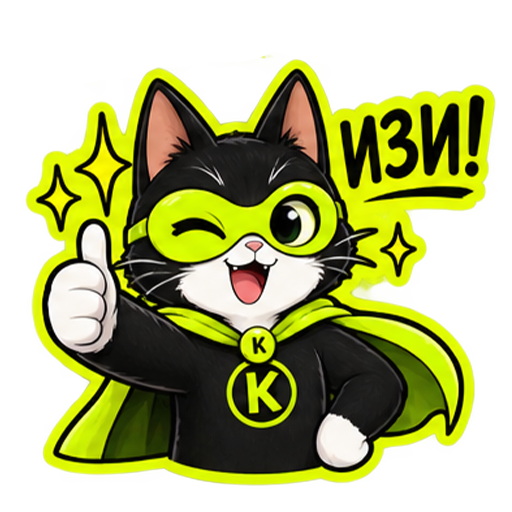
«Ученик для меня — не один час в расписании».
Если во время самостоятельной подготовки возникает вопрос, его не обязательно откладывать до следующего урока. Я остаюсь на связи и помогаю не терять темп.
Познакомимся, посмотрим текущий уровень, разберём несколько заданий и поймём, какой маршрут подготовки подойдёт именно вам.